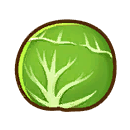

Cocinando


Cocinar es una actividad que puede beneficiarte tanto a ti como a tus relaciones con los aldeanos. Puede comer comidas cocinadas para recuperar su resistencia y fatiga al comerlas, o regalarlas para aumentar sus puntos de amor y amistad con otras personas.

Para acceder a la lista de recetas puede consultarlo en el recetario.
Obtener la habilidad de cocinar y la cocina
Para empezar a cocinar necesitarás mejorar tu casa. Pasaras de tener una tienda de acampar a una casa y nesesitaras una refrigeradora parra guardar los ingredientes para cocinar.
Tu nevera
Su cocina inicial contará con 24 espacios para almacenamiento en el refrigerador 1. Después de cada expansión de la casa, se le agregará espacio adicional en el refrigerador. Cada adición de refrigerador agregará 24 ranuras de almacenamiento para artículos. Puede obtener un total de cuatro refrigeradores, para un total de 96 espacios de almacenamiento después de adquirir todas las mejoras en el hogar. Aunque parezca extraño, también puedes utilizar las cocinas de tus vecinos en Olive Town cuando visites sus casas.
Su refrigerador no clasifica por usted, debe agregarle elementos manualmente. Es una buena idea asegurarse de no almacenar artículos duplicados en el refrigerador durante largos períodos de tiempo para ahorrar espacio para más tipos de artículos para otros platos. También puede usar su bolsa como almacenamiento temporal para artículos de cocina, ya que se puede acceder a su bolsa en el mismo menú que el refrigerador cuando busca ingredientes.
Conceptos básicos de cocina y rasgos de habilidad
Ingredientes de selección automática
Después de seleccionar una receta, puede seleccionar automáticamente sus ingredientes. Se le dará la opción de utilizar primero los ingredientes de mayor o menor calidad en su refrigerador o bolsa. Esta es una muy buena manera de liberar espacio en su refrigerador de ingredientes de bajo nivel, o si se necesitan algunos ingredientes y no desea ubicarlos manualmente. Sin embargo, tenga cuidado, porque si está almacenando ingredientes de alto nivel para un plato especial, los extraerá primero si se elige la opción de selección automática de ingredientes de alto nivel. Esto puede ser especialmente riesgoso cuando las recetas requieren ciertos grupos de alimentos y seleccionarán cualquier verdura que se encuentre en su almacén.
Tiempo
Cada plato tarda 30 minutos en el juego. Tenga cuidado de no preparar platos después de la 1:30 a. m., porque pasará de las 2:00 a. m. y se desmayará.
Grupos de comida
A veces, los platos requieren un grupo de alimentos en lugar de un solo elemento específico. Por ejemplo, el Grupo de Hortalizas necesitará cualquier verdura, no sólo maíz. Esto le permite tener más libertad a la hora de recolectar sus ingredientes.
Coberturas o aderezo
Después de desbloquear los aderezos en el nivel 7 de habilidad de cocina, se te dará acceso para agregar aderezos a todos tus platos. Agregar un aderezo a un plato aumentará la calidad del mismo. Sin embargo, el aderezo no es necesario para completar el plato, por lo que, a diferencia de los ingredientes principales, no se le impedirá crear algo si le falta el ingrediente de aderezo.
Aprender nuevas recetas
Después del nivel de cocina 5, potencialmente podrás aprender nuevas recetas comiendo en el Café and Capeside Bistro. Después de obtener el nivel de platos requerido para aprenderlo, visita el restaurante que especifica y come el plato que deseas aprender. Los platos que aprendes se agregan al menú una vez que alcanzas ese nivel, por lo que aparecerán como un nuevo plato disponible para probar en ese lugar.
Procesadoras relacionados con la cocina
El nivel de habilidad de cocina 3 desbloquea la procesadora de condimentos y el nivel de habilidad de cocina 4 desbloquea la procesadora de aliño. En el nivel 10 de habilidad de cocina, puedes desbloquear tanto el Giant Seasoning Maker como el Giant Condiment Maker .
Cultivos gigantes y mutados
Si utilizas un cultivo mutado (patata estrella versus patata normal), tendrás un plato de mayor calidad. Si utilizas cualquier cultivo gigante (papa gigante) en una receta, recibirás x5 del plato que seleccionaste.
Recursos Naturaleses
En cada zona de la granja se pueden encontrar todo tipo de cultivos y hierbas silvestres y lo que crece cambia con las estaciones. También se pueden encontrar diferentes tipos de árboles y césped en cada zona de la finca. Las cebollas, los melones y las coles silvestres sin cosechar permanecerán en la granja una temporada más. Verano, Otoño y Primavera, respectivamente.
Área de Granja 1
| Temporada | Nombre |
|---|---|
 Cebolla  Baya silvestre  Helecho real  Orégano  Flor de gota de luna  Almeja roja |
|
|
Baya silvestre Helecho real Orégano Flor de gota de luna Almeja roja |
|
|
Baya silvestre Helecho real  Castaña Orégano Flor de gota de luna Almeja roja |
|
|

Col Baya silvestre Helecho real Orégano Flor de gota de luna Almeja roja |
Área de Granja 2
| Temporada | Nombre |
|---|---|
 Fresa  Ranúnculo  Seta shiitake Seta shimeji  Ruibarbo de ciénaga  Salvia Almeja roja  Grano de pimienta  Caña de azúcar  Flor de gato rosa  Ostra  Sal de roca |
|
 Melón Girasol Seta shiitake Seta shimeji Salvia Grano de pimienta Caña de azúcar Flor de gato rosa Ostra Sal de roca |
|
 Chile  Margarita Seta shiitake Seta shimeji Salvia Grano de pimienta Caña de azúcar Flor de gato rosa Ostra Sal de roca |
|
 Campánula Seta shiitake Seta shimeji Salvia Grano de pimienta Caña de azúcar Flor de gato rosa Ostra Sal de roca |
Área de Granja 3
| Temporada | Nombre |
|---|---|
|
Sal de roca  Pensamiento negro  Seta de cardo  Seta de coral  Cola de caballo  Caléndula limón  Flor Azul Mágica  Flor Roja Mágica  Romero dorado  Mejillón |
|
|
Sal de roca  Lirio Seta de cardo Seta de coral Caléndula limón Flor Azul Mágica Flor Roja Mágica Mejillón Romero dorado  Piña |
|
|
Seta de coral Sal de roca Caléndula limón Flor Azul Mágica Flor Roja Mágica Seta de cardo Romero dorado  Rosa negra Mejillón |
|
 Puerro Sal de roca Seta de cardo Seta de coral  Brote de bambú Caléndula limón Flor Azul Mágica Flor Roja Mágica Mejillón  Eléboro Romero dorado |